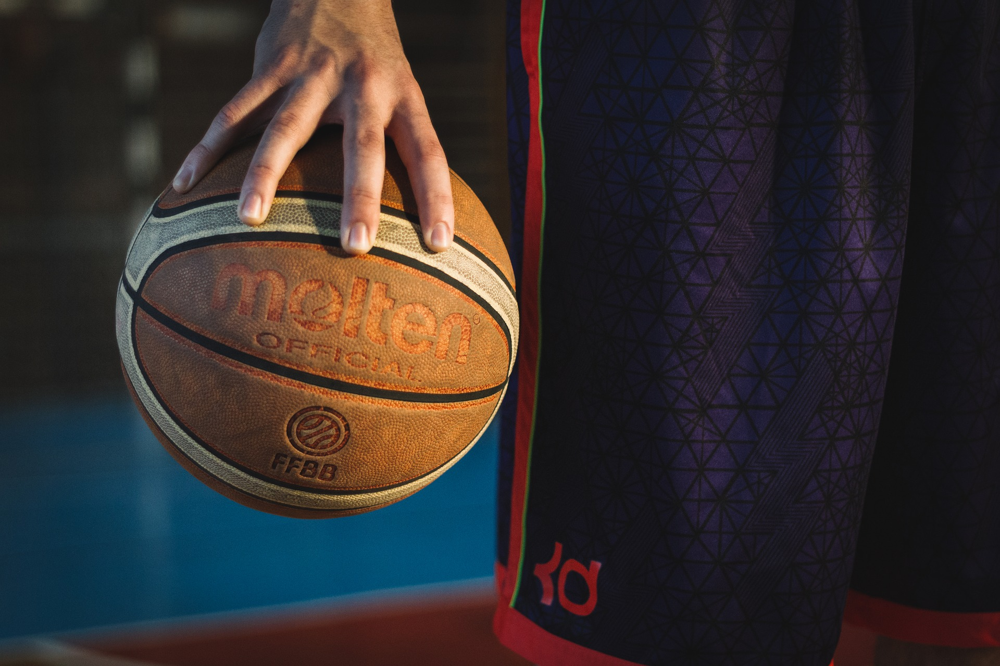

Moje hobby - koszykówka
Wymiar 6 jest najpowszechniejszym jak i najbardziej uniwersalnym wymiarem piłki do koszykówki na całym świecie.
Średnica 24 cm sprawia,że idealnie pasuje do dłoni podczas rzutu czy też kozłowania. Między innymi
dlatego często można spotkać nawet kobiety jak i dzieci grające tym rodzajem piłki.
